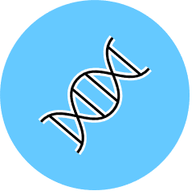

Introductory module
GM1 - An introduction to human genetics and genomics

This module consists of approximately 30 hours of contact time, delivered in 2022 as face-to-face teaching. This introductory module aims to provide the student with an introduction to the key areas of genomics, human genetics and genetic variation. It will prepare participants to understand disease genetics and how genomic medicine can be utilised to elucidate disease mechanisms and biology. In addition, this module will also cover the fundamentals of information governance in the context of genomic medicine and its applications providing underpinning knowledge for later modules in bioinformatics and statistics. This module will serve as a foundation for those wishing to advance their careers within the NHS in genomic medicine. This module provides clear understanding of the structure and variations in genetic material. Covering basic genetics and genomics, it will prepare students to understand the role of genetics in disease and how genomic information can be utilised to elucidate disease mechanisms and biology.
What will I study in module 1?
In GM1 you will learn about:
Structure and function of nucleic acids and chromosomes
Architecture and organisation of the human genome and genetic variation within it
DNA sequence variation, type and frequency e.g. single nucleotide variants, small insertions and deletions, copy number variation, rearrangements and tandem repeats
How variation arises and its extent in populations (e.g. HapMap)
Gene regulation: enhancers, promoters, transcription factors, silencers
Epigenetics and imprinting
Mutational mechanisms: how different types of DNA variants affect gene function or expression to cause disease; correlation of genotype with phenotype
Concepts of penetrance, expressivity, heterogeneity and pleiotropy
Modes of inheritance for clinical manifestation of human variation
Types of genetic testing (prenatal, carrier, predictive, diagnostic, cascade, screening, etc)
Germline, mitochondrial and somatic mutations
Chromosomal abnormalities and disease
Mechanisms of Mendelian disorders
Interpretation of genetic variation
Basic Bayesian approach to calculating disease probabilities
Overview of key ethical, legal and social implications of genomics
Introduction to some of the principles underlying application of genomic data in clinical practice
Legislation, Codes of Practise, Caldicott Guardian and Information Commissioner
Patient identifiable data and information, relationship between data and information
Information system risks to patient safety, electronic and paper copies, safe havens, encryption, secondary uses of data, audit and research
Secure information exchange between professionals
Sharing and communication with patients and careers, consent
Handling requests for information about patients /clients.
Pre-course reading
We recommend you complete our primer reading on the Knowledgebase prior to attending the course. In addition the following material may be of use to you both during and in preparing for the Genomic Medicine programme.
Genetics in Medicine Review 1 from the Galton Institute summarises much of the material in module 1 and is a good companion for the module.
Review Articles
These review articles are a good starting point to develop your reading around the use of genomics in medicine.
Burke W, Korngiebel DM. (2015) Closing the gap between knowledge and clinical application: challenges for genomic translation. PLoS Genet. 11(2):e1004978. [PMID: 25719903]
Gerstein MB et al., (2007) What is a gene, post-ENCODE? History and updated definition. Genome Res. 17(6):669-81. [PMID: 17567988]
Green ED et al., (2011) Charting a course for genomic medicine from base pairs to bedside. Nature. 470(7333):204-13. [PMID: 21307933]
Katsanis SH, Katsanis N. (2013) Molecular genetic testing and the future of clinical genomics. Nat Rev Genet. 14(6):415-26. [PMID: 23681062]
Primary research articles
The following primary research articles are cited in "Introduction to human genetics and genomics" and are a good introduction to some of the ideas. However, many of these will not be easy to understand without the context of the lectures.
Auton A et al., (2015) A global reference for human genetic variation. Nature. 526(7571):68-74. [PMID: 26432245]
MacArthur DG, et al., (2014) Guidelines for investigating causality of sequence variants in human disease. Nature. 508(7497):469-76. [PMID: 24759409]
Quintáns B et al., (2014) Medical genomics: The intricate path from genetic variant identification to clinical interpretation. Appl Transl Genom. 3(3):60-7. [PMID: 27284505]
Rivas MA et al., (2015) Human genomics. Effect of predicted protein-truncating genetic variants on the human transcriptome. Science. 348(6235):666-9. [PMID: 25954003]
Samocha KE et al., (2014) A framework for the interpretation of de novo mutation in human disease. Nat Genet. 46(9):944-50. [PMID: 25086666]
Lek M et al., (2016) Analysis of protein-coding genetic variation in 60,706 humans. Nature. 536(7616):285-91. [PMID: 27535533]
All of the articles cited above are available to download from the VLE once you have arrived in Cambridge.
Databases
Module 1 has a few workshops which will allow you to get to grips with using different medical genetics online resources and databases. If you want to investigate examples of such tools prior to the course then we recommend exploring DECIPHER, ClinVar and OMIM. These will get you used to navigating around online database resources, and will be familiar to you when encountered in the course.
DECIPHER - https://decipher.sanger.ac.uk/ - Firth HV et al., (2009) DECIPHER: Database of Chromosomal Imbalance and Phenotype in Humans using Ensembl Resources. Am.J.Hum.Genet 84, 524-533. [PMID: 19344873]
OMIM - https://omim.org/ - Hamosh A et al., (2005) Online Mendelian Inheritance in Man (OMIM), a knowledgebase of human genes and genetic disorders. Nucleic Acids Res. 33(Database issue):D514-7.
ClinVar - https://www.ncbi.nlm.nih.gov/clinvar/ - Landrum MJ, et al., (2018) ClinVar: improving access to variant interpretations and supporting evidence. Nucleic Acids Res. 46(D1):D1062-D1067. [PMID: 29165669].
Text books
A number of excellent text books have been written for Medical Genetics. However, they are more suited to an undergraduate genetics course. If, however you would like to purchase a textbook for reference use then the following is recommended:
Strachan, T and Read, A. (2011) Human Molecular Genetics 4th Edition. United States, New York : Garland Science/Taylor & Francis Group. [ISBN: 9780815341499]
Have a look at Chapters 1, 2, 9, and 11.
What will I be able to achieve at the end?
By the end of this module students will be able to:
Discuss the human genome structure and the properties of DNA
Critique genome architecture and its variation across human populations
Critically evaluate the regulation of gene expression, transcription and translation
Appraise and interpret variation in genome structure and sequence in the context of physiological function and disease
Discuss and analyse epigenetic modifications and imprinting and its role in disease
Correlate genetic markers to phenotype and interpret output of association studies both for dichotomous and quantitative traits
Discuss different disease mechanisms and modes of inheritance
Apply concepts of inheritance and calculate genetic risks for Mendelian conditions
Discuss and justify the ethical and governance frameworks in place within the NHS and how they apply to medical genomics including patient safety, data sharing and confidentiality
Identify the range, purposes, benefits and potential risks of sharing, integrating and aggregating clinical data and information.
Describe and evaluate the purpose, structures, use and storage of health records.
Preserved from https://www.genomics.cam/modules/introduction-to-human-genetics-and-genomics on 10 September 2026. Linked external services may require internet access. The original source snapshot is included with the migration files.